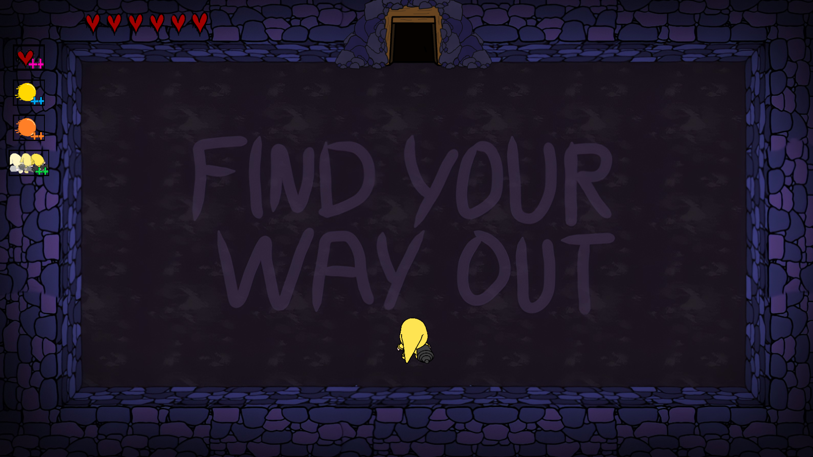
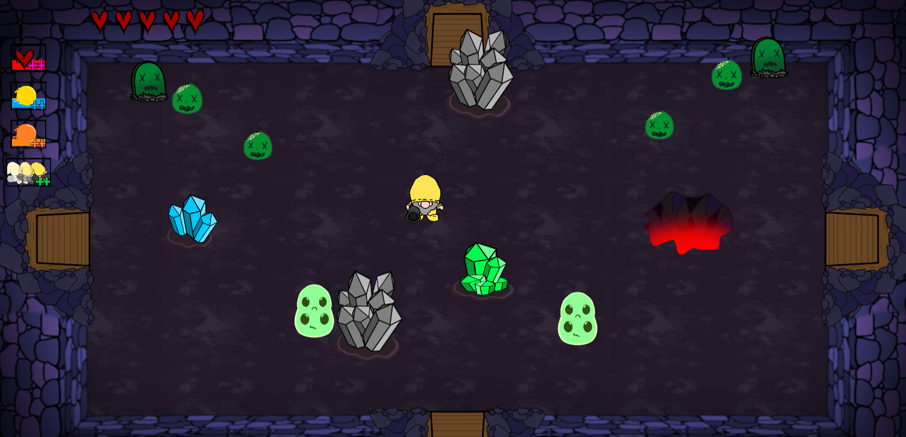
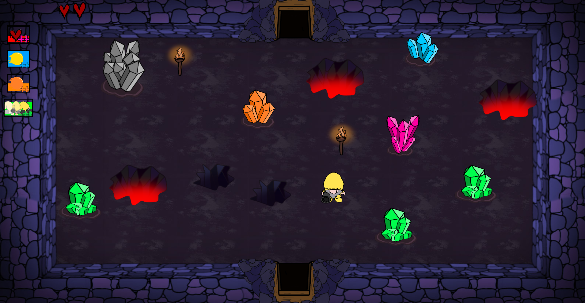

About the game
SlimeMine is a 2D roguelike top-down shooter developed in a custom engine.
After becoming trapped inside the mine where he works, Saam must battle slimes and other creatures to escape. Each run allows the player to improve stats and adapt their build to survive deeper areas of the mine.
As part of the development team, I worked on gameplay systems, player progression, and enemy encounters, helping shape the core loop of exploring rooms, fighting enemies, and upgrading the character.
Gameplay systems
- Implemented player movement and core gameplay controls
- Integrated character animations into the gameplay systems
- Worked on overall gameplay feel and responsiveness
Enemies and encounters
- Programmed different enemy behaviours and encounters
- Implemented the zombie grave enemy spawning system
- Worked on the final boss, including enemy wave summoning mechanics
- Created movement patterns using curve-based paths
Player progression
- Implemented the main menu and pause menu systems
- Worked on the options/settings menu
- Connected menu functionality with gameplay systems